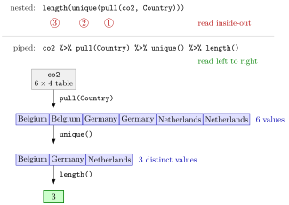

Pipe Operator¶
Definition¶
The pipe operator %>% passes the value on its left as the first argument of the function call on its right:
A chain data %>% step1() %>% step2() %>% step3() is read from left to right: the output of each step becomes the input of the next. The tidyverse uses this pipe, which comes from the magrittr package and is attached by library(tidyverse). Since version 4.1.0, R also has a built-in pipe |> that works the same way for ordinary calls and needs no package.
Interpretation¶
A pipe turns an inside-out nested call into a sequence of steps written in the order they are carried out. length(unique(pull(co2, Country))) has to be read from the innermost parentheses outwards; co2 %>% pull(Country) %>% unique() %>% length() reads like a recipe: take the data, extract the country column, keep the distinct values, count them.

The top row of the figure is the nested call, numbered in the order R evaluates it. The bottom row is the pipe chain on the six-row table of Example 1: pull() extracts a character vector of six country names, unique() reduces it to three, and length() returns 3. Both rows compute the same value; only the reading order differs.
Only the first argument is filled in by the pipe. Every other argument is written as usual inside the parentheses, so x %>% round(digits = 1) is round(x, digits = 1). Naming these extra arguments, as in mean(na.rm = TRUE) rather than mean(TRUE), makes a chain much easier to read. All dplyr and tidyr functions take the data as their first argument, which is why they fit a pipe so well.
In mathematics this is composition of functions: x %>% f() %>% g() is , written in the order "first , then ".
A common mistake is to start a new line with the pipe. R ends a command at the end of a line whenever the line is already complete, so the pipe must stand at the end of the line that continues, not at the start of the next one (Example 4).
Key Results¶
x %>% f(y, z)is the same call asf(x, y, z); the piped value always becomes the first argument.- A chain
x %>% f() %>% g() %>% h()equals the nested callh(g(f(x)))and is evaluated from left to right. - The pipe used throughout the tidyverse is
%>%from magrittr, available afterlibrary(tidyverse); base R since version 4.1.0 also provides|>. - With
%>%the parentheses of a call without further arguments may be left out (x %>% length);|>always needs them (x |> length()). - A line ending in
%>%continues on the next line; a line starting with%>%is a syntax error. - The result of a chain can be stored with
<-at the front:result <- data %>% step1() %>% step2().
Examples¶
The examples use this small made-up extract of an emissions table (one row per country and year).
library(tidyverse)
co2 <- tibble(
Country = c("Belgium", "Belgium", "Germany", "Germany", "Netherlands", "Netherlands"),
Year = c(2020, 2021, 2020, 2021, 2020, 2021),
Transport = c(22, 24, 146, 148, 30, 31),
Waste = c(2.1, 2.3, 10.4, 9.8, 4.2, NA)
)
1. Nested call, intermediate objects, pipe. Three ways to count the countries:
countries <- co2$Country
unique_countries <- unique(countries)
length(unique_countries)
#> [1] 3
length(unique(co2$Country))
#> [1] 3
co2 %>% pull(Country) %>% unique() %>% length()
#> [1] 3
The first version creates two objects that are never used again; the second must be read from the inside out; the pipe needs neither.
2. Extra arguments inside a pipe. The mean waste emission, ignoring the missing value, rounded to one decimal:
co2 %>% pull(Waste) %>% mean(na.rm = TRUE) %>% round(digits = 1)
#> [1] 5.8
round(mean(co2$Waste, na.rm = TRUE), 1)
#> [1] 5.8
The mean is . In the pipe, mean() receives the vector as its first argument and round() receives 5.76.
3. The built-in pipe. The same chain works with |>, but every step must be a call with parentheses:
co2 |> pull(Country) |> unique() |> length()
#> [1] 3
co2 %>% nrow
#> [1] 6
co2 |> nrow
#> Error in nrow :
#> The pipe operator requires a function call as RHS (<input>:1:8)
4. Pitfall: a pipe at the start of a line. Long chains are split over several lines, one step per line. The pipe has to end the line:
The first line is already a complete command, so R runs it and stores the whole column in total; the second line on its own makes no sense. Written as co2 %>% pull(Transport) %>% followed by sum() on the next line, the chain gives 401.
Prerequisites¶
Related Concepts¶
Sources¶
- Programming for EOR · Week 4
- Lecture 4 script, Data Wrangling with the tidyverse & Visualisation with ggplot2: Pipes; Specifying Function Arguments
Aliases: pipe, pipes, %>%, |>, magrittr pipe, native pipe, piping Keywords: %>%, left to right, first argument, nested calls
Last updated: 10 November 2026 16:43
Pipe OperatorCore dplyr VerbsFunction CallFunction Arguments and DefaultsTibbleGrouped SummariesWriting FunctionsComposition of Functions